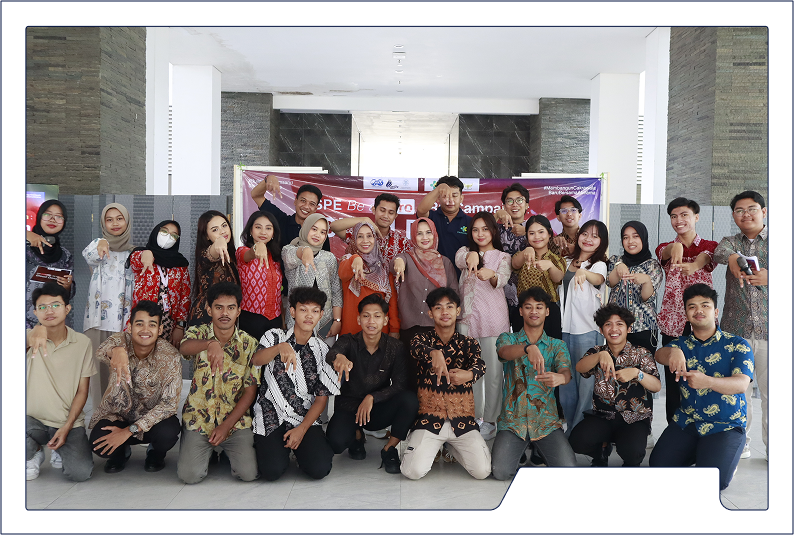
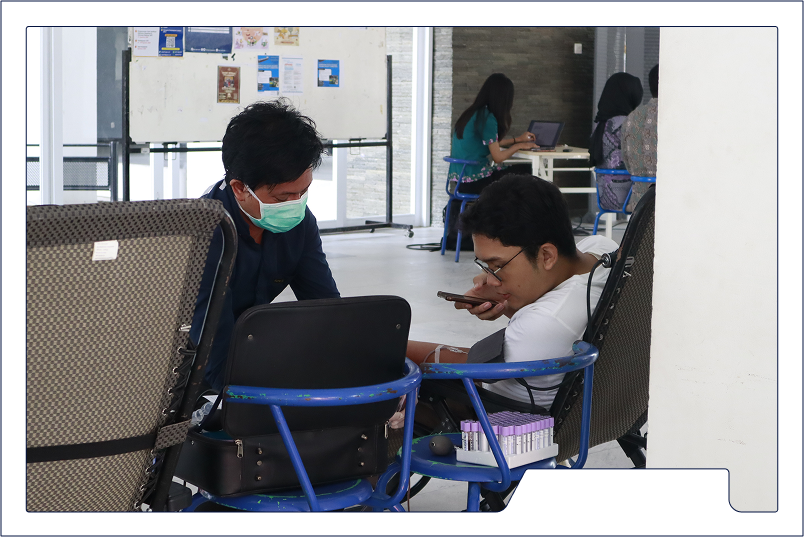
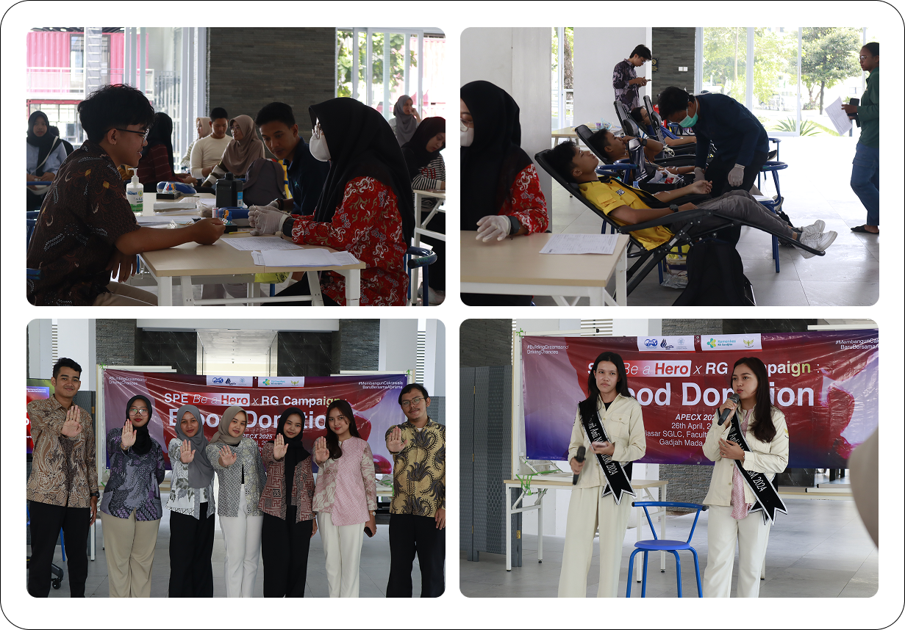

BLOOD DONOR

Blood donation activities are a vital effort in maintaining public health and meeting the need for blood transfusions in hospitals. Each year, the number of patients requiring blood transfusions continues to increase, whether due to accidents, surgeries, or specific illnesses. However, blood availability is often insufficient, threatening patient safety. Through blood donation activities, we can help ensure that a safe and adequate blood supply is available for those who need it. Furthermore, blood donation provides an opportunity for individuals to contribute directly to public health and save lives.
Besides the benefits for blood recipients, blood donation activities also have advantages for the donors themselves. The blood donation process can help improve the donor's health by stimulating the production of new blood cells and reducing the risk of certain diseases. Additionally, this activity can also raise public awareness about the importance of health and social solidarity. By organizing regular blood donation drives, it is hoped that a culture of caring for one another can be built, and community bonds strengthened. Therefore, organizing blood donation activities is a strategic step in creating a healthy and supportive society.
DOKUMENTATION
